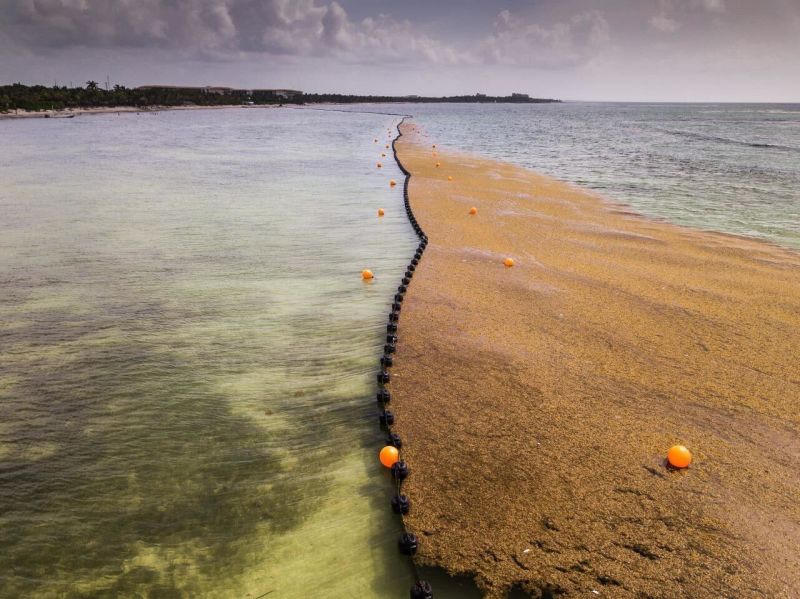
Distribuidores oficiales DESMI · Latinoamérica
El sargazo
se queda en el agua.
Instalamos la barrera de malla en hoteles y playas de Cancún, Playa del Carmen y la Riviera Maya.
+10
Hoteles y playas
que hemos protegido en el Caribe mexicano.
+5,000 m
De barrera instalada
por nuestro equipo, en tramos DESMI Mesh Boom.
+20 años
De experiencia
Llevamos trabajando desde 2005.
Hemos trabajado con
Un cinturón
que antes no estaba.
En 2010 casi no había. Desde 2011 se forma en el Atlántico una franja de sargazo que va de África al Caribe y regresa casi cada año. En 2025 rompió récord.
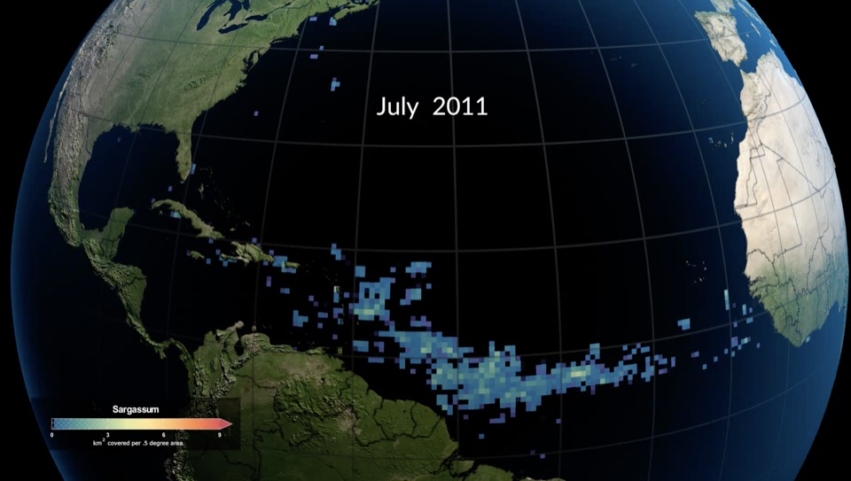
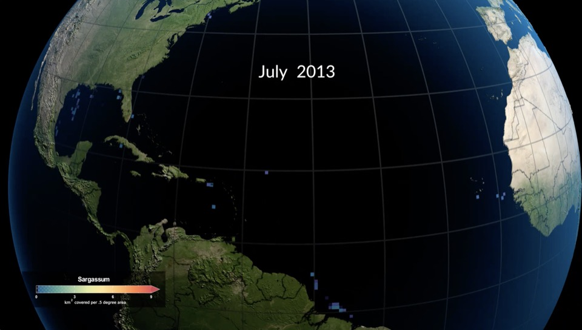
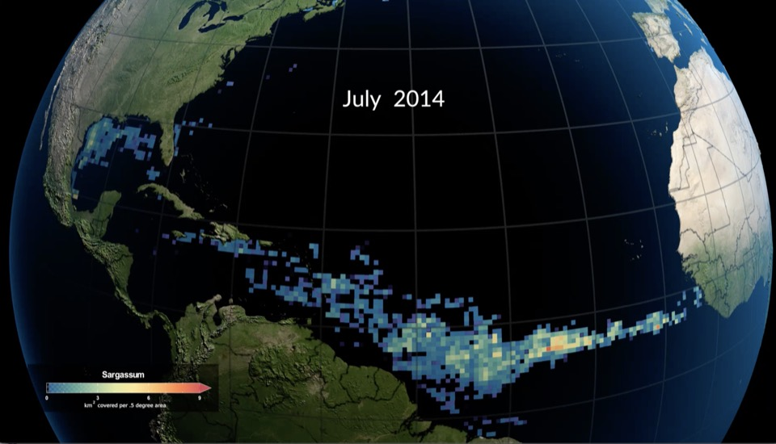
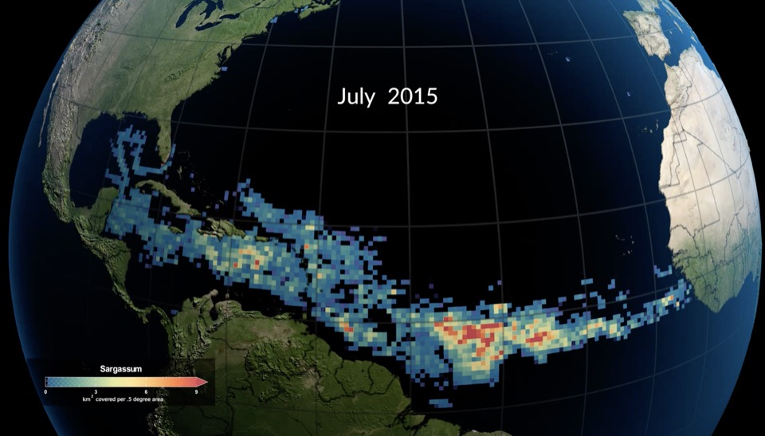
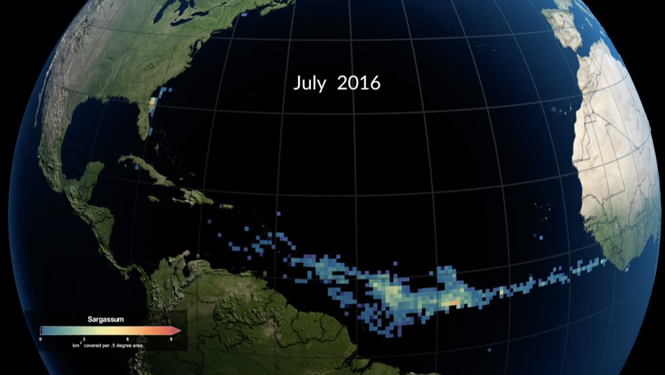
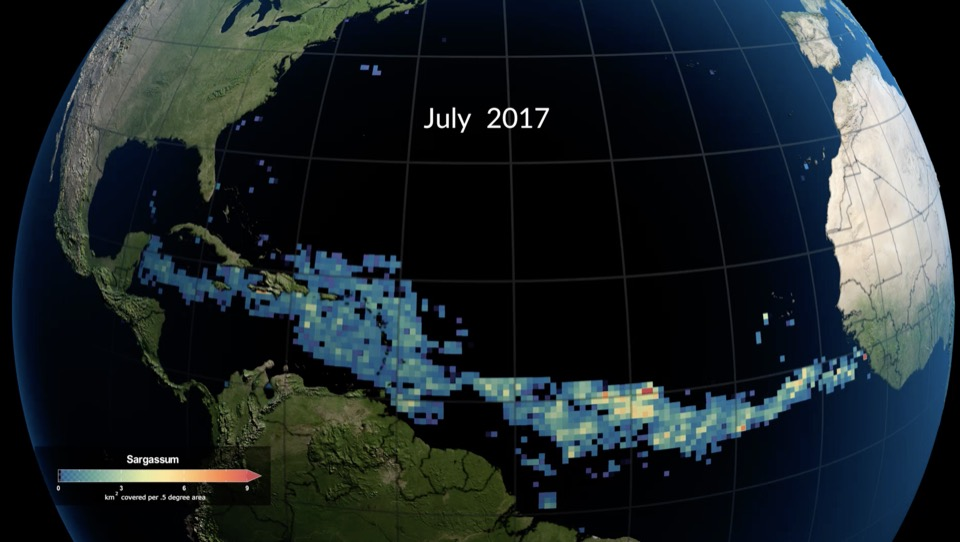
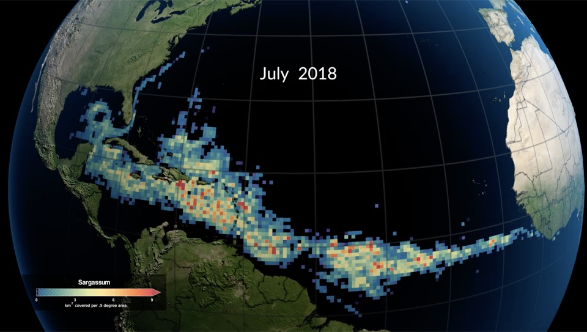
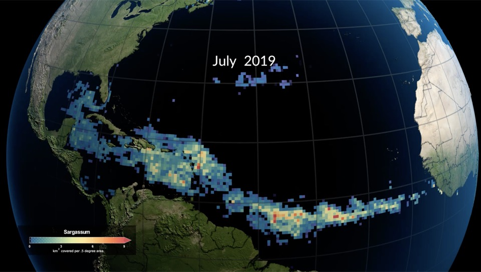
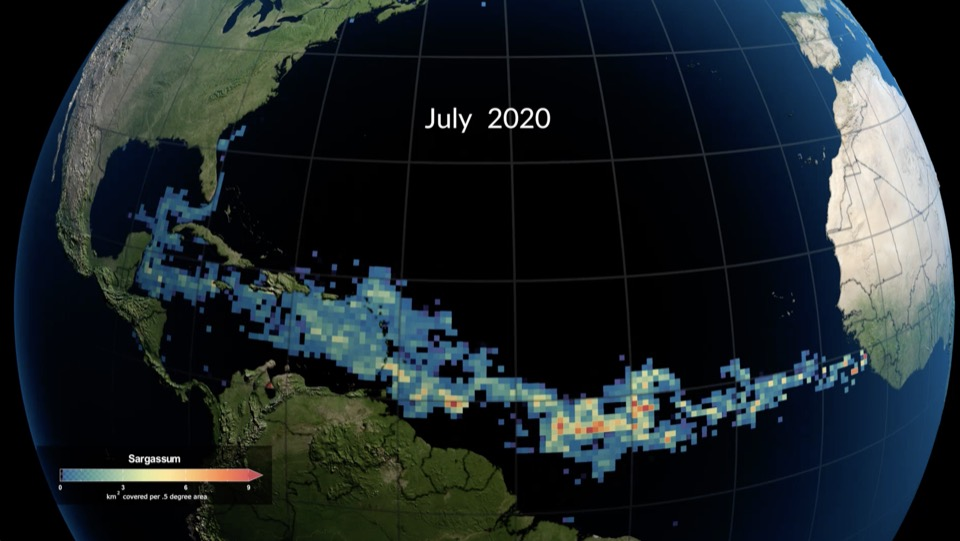
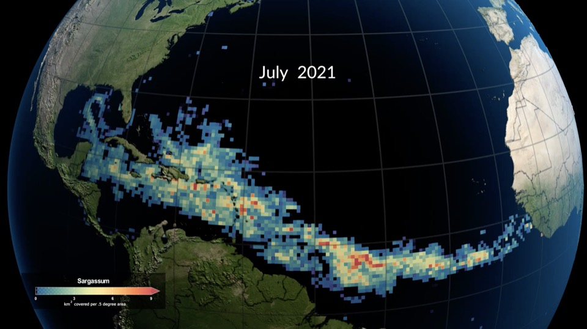
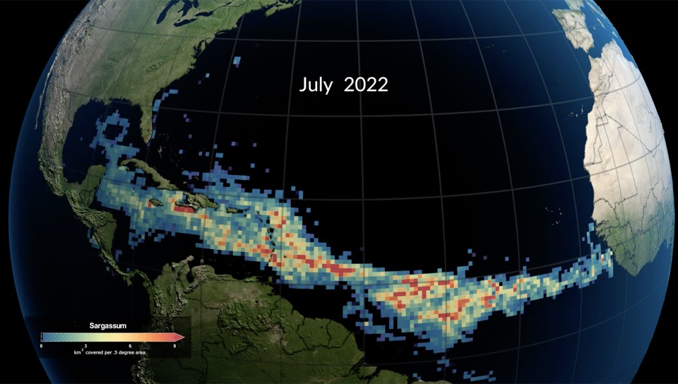
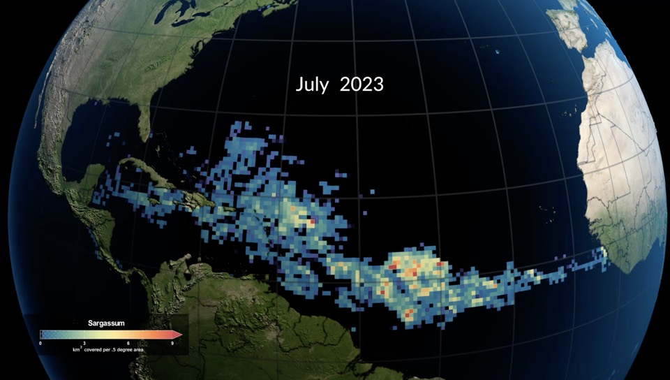
Sargazo en el Atlántico cada julio, 2010–2023. Imágenes satelitales MODIS · NASA.
2011
Aparece el cinturón
Empieza a formarse el cinturón. Desde entonces vuelve casi cada año.
37.5 Mt
Atlántico, mayo 2025
Récord desde que empezó el monitoreo satelital.
3.6 Mt
Caribe occidental
Junio de 2026, récord para ese mes en el Caribe. La región incluye la costa de Quintana Roo.
Fuentes: NASA SVS, USF y NASA Earth Observatory. Cifras del Atlántico y el Caribe, no toneladas recogidas por nosotros.
Una malla.
No un muro.
La barrera DESMI flota con esferas de HDPE y cuelga un faldón de malla náutica hasta 75 cm bajo el agua. El agua, las olas y el viento la cruzan. El sargazo no.
Ficha técnica de la barrera
- Altura total
- 105 cm
- Francobordo
- 30 cm
- Calado
- 75 cm
- Flotadores
- Ø 36 cm, HDPE
- Malla
- Poliéster, 53 kN
- Tramo
- 15 m
- Conectores
- Aluminio ASTM F962
- Lastre
- Hierro galvanizado
Fuente: ficha técnica DESMI Mesh Boom.
De la barrera
al contenedor.
Vendemos, instalamos y damos mantenimiento a la barrera, y sacamos del agua el sargazo que detiene. Todo pasa en el mar, sin camiones ni tractores sobre la arena.
-
01
Venta
Somos distribuidores oficiales de DESMI en Latinoamérica: te vendemos la barrera Mesh Boom en tramos de 15 m y el equipo de recolección.
-
02
Instalación
Visitamos la playa, trazamos la barrera en desvío o en bolsa según la corriente y el oleaje, y la anclamos al fondo.
-
03
Mantenimiento
Revisamos flotadores, malla y fondeo, y reparamos en sitio. Si viene mal tiempo, retiramos la barrera del agua.
-
04
Recolección
Sacamos el sargazo del agua antes de que toque la orilla, limpio de arena y listo para su disposición final.
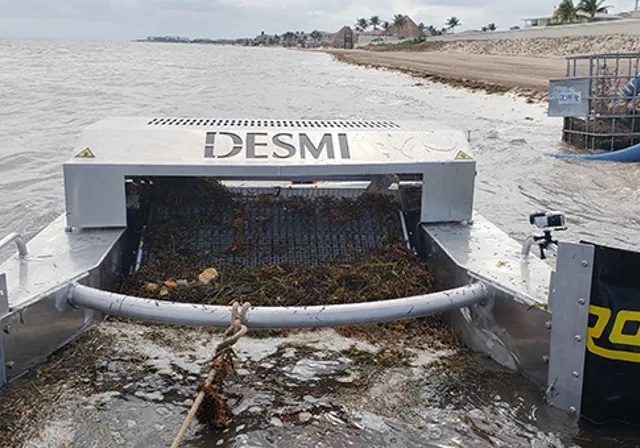
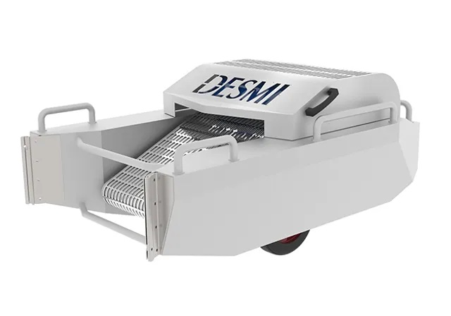
Recolección · DESMI Sea Turtle MKII
El sargazo sale del agua, no de la arena.
- 01
Nuestra barrera junta el sargazo en la bolsa.
- 02
Colocamos la unidad flotante, que lo levanta con una banda de acero inoxidable.
- 03
Lo mandamos por manguera al contenedor o camión, hasta 200 m tierra adentro.
Ficha técnica del recolector
- Capacidad
- 20–30 m³/h
- Transferencia
- Hasta 200 m
- Operación
- 1 o 2 personas
- Condiciones
- Aguas bajas y mal tiempo
Fuente: ficha técnica DESMI Sea Turtle MKII.
Costa
Con sargazo / sin sargazo
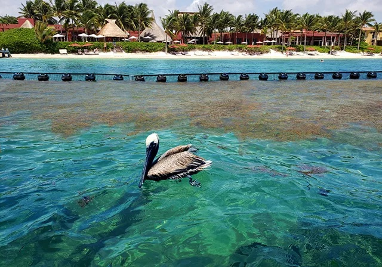
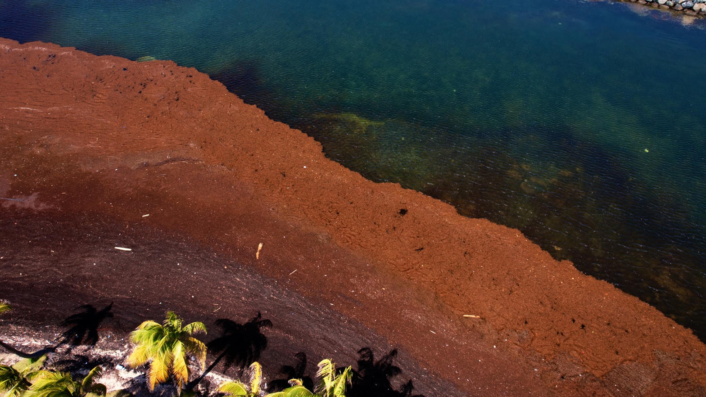
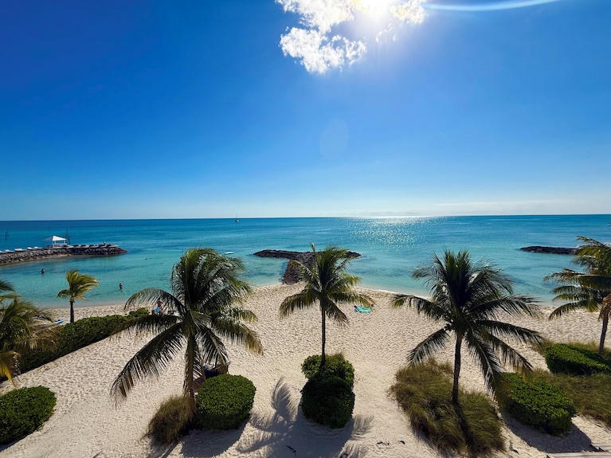
Preguntas
frecuentes.
Lo que más nos preguntan los hoteles y administradores de playa antes de instalar.
¿Afecta a las tortugas y a los peces?
La malla es una rejilla, no una red: no enreda peces. Baja solo 75 cm, así que deja libre el paso por debajo. Los flotadores son de HDPE relleno de espuma, sin poliestireno que se desmorone en el mar.
¿Aguanta el oleaje y el viento?
Sí. Como el agua y el viento cruzan la malla, la barrera recibe menos empuje que una de muro. DESMI la diseñó para olas grandes y viento fuerte, y reporta alrededor de 90% de eficiencia en las instalaciones del Caribe.
¿Qué pasa si viene un huracán?
Los tramos se unen con conectores deslizantes, así que desconectamos la barrera y la sacamos del agua rápido. La guardamos y la volvemos a instalar cuando pasa el mal tiempo.
¿Qué se hace con el sargazo que se detiene?
Lo sacamos del agua con la unidad de recolección y lo mandamos por manguera a contenedores o camiones, lejos de la playa. Sale sin arena, así que puede aprovecharse después.
¿Se necesita algún permiso?
PENDIENTE · Explicar qué permisos se requieren (zona federal marítimo terrestre, autoridades) y si nosotros los gestionamos.
¿Cuánto tarda la instalación?
PENDIENTE · Tiempo típico de instalación según metros de barrera.
¿Cuánto cuesta?
Depende de los metros de costa, del oleaje y del fondo de cada playa. Te cotizamos después de revisar el sitio: escríbenos con la ubicación y los metros aproximados.
Cancún · Playa del Carmen · Riviera Maya
Cuéntanos de tu playa.
Con la ubicación y los metros de costa te decimos qué acomodo conviene y te mandamos una cotización.
- Correoece.corporativo@prodigy.net.mx
- WhatsApp—
- OficinaVillahermosa, Tabasco